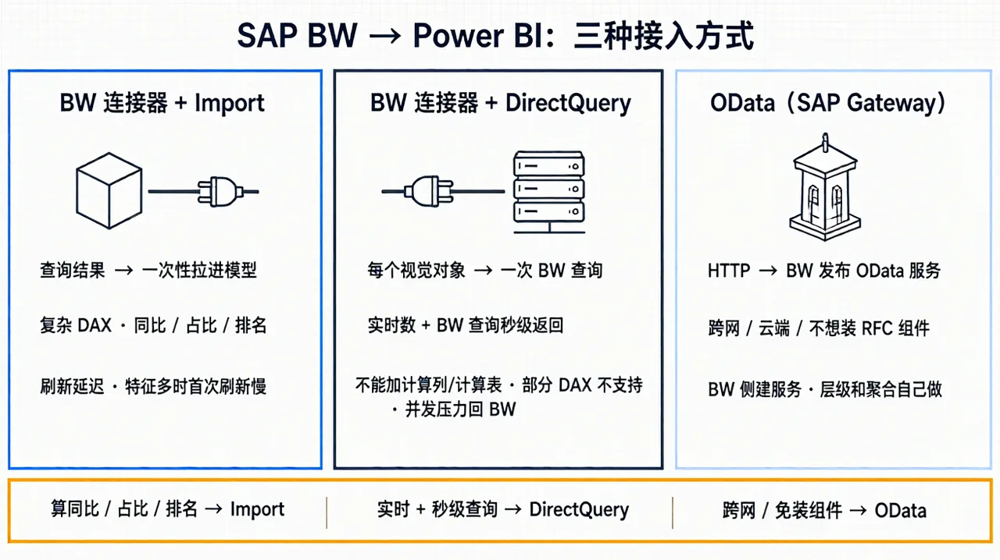
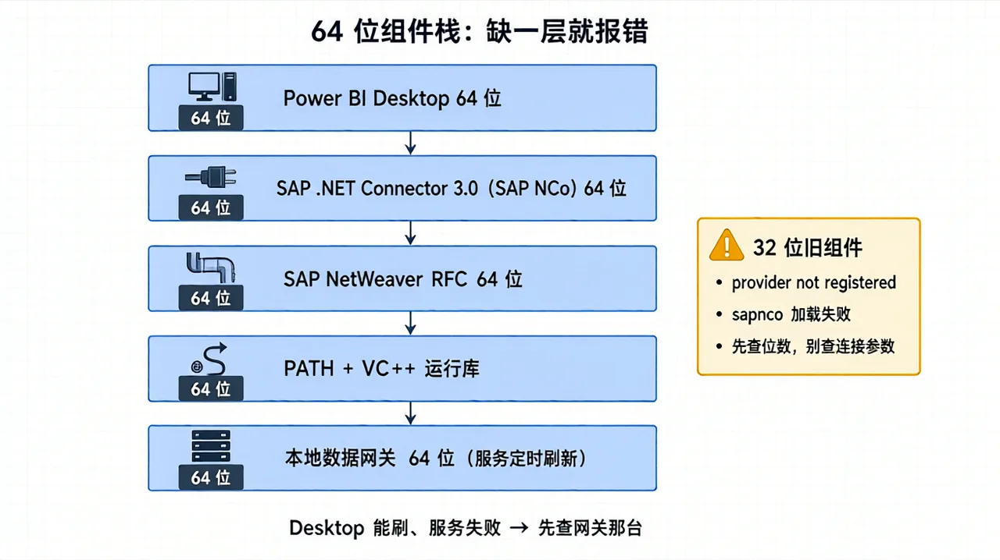
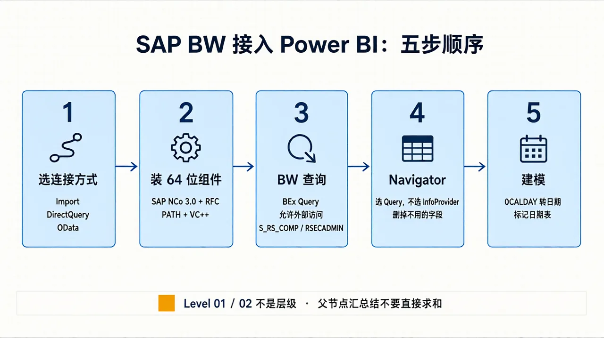
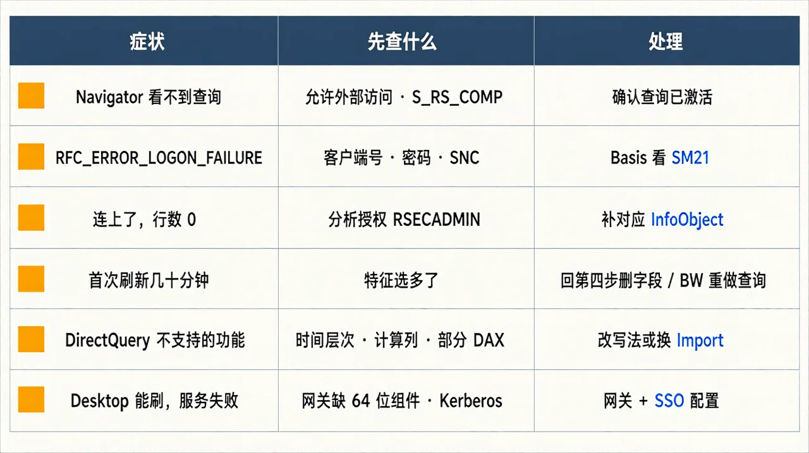

SAP BW 接 Power BI：6 个坑和一份清单
SAP BW 接 Power BI，卡点在连接之前：选型、组件位数、查询发布和授权。附六个高频坑与上线清单。

SAP BW 接 Power BI，麻烦大多出在连接之前，不在建模里。
查询在 BW 里跑得好好的，到 Power BI 里选不到。表连上了，刷一次四十分钟。DirectQuery 一点，一半视觉对象变灰。这些都不是 DAX 的问题，是连接方式、组件版本和授权的问题。
SAP BW Power BI 接入的顺序不能乱：先定连接方式，再装组件，然后在 BW 里把查询准备好，最后才建模。顺序反了，每一步都在补救上一步。
下面按这个顺序走，文末有上线前的检查清单。需要有人把这一段整体打通，服务 页写了范围；只是想让自己手上的报表先跑起来，看完照着做就行，卡住了从 联系 页找我。
第一步：连接方式只有三种，先选，别试
SAP BW 不是数据库。它是一个建好模的数据仓库，对外主要暴露两类对象：查询（BEx Query）和信息提供者（InfoProvider，比如 InfoCube、CompositeProvider、DSO）。Power BI 的 SAP BW 连接器读的就是这两类东西。
三种走法，代价完全不同：
| 走法 | 数据怎么走 | 适合什么 | 代价 |
|---|---|---|---|
| BW 连接器 + Import | 查询结果一次性拉进模型 | 报表结构固定，要写复杂 DAX | 有刷新延迟；特征越多，首次刷新越慢 |
| BW 连接器 + DirectQuery | 每个视觉对象下推成一次 BW 查询 | 必须看实时数，且 BW 侧已有跑得快的查询 | 模型里不能加计算列和计算表，部分 DAX 用不了，并发压力回到 BW |
| OData（SAP Gateway 服务） | 走 HTTP，BW 侧发布成 OData 服务 | 跨网、云端、不想在每台机器装 RFC 组件 | 要在 BW 侧建服务，层级和聚合得自己处理 |
判断规则只有一条：报表要算的东西越多，越该用 Import。 同比、占比、排名、动态分组，这些都要在模型里算。DirectQuery 下算不了，只能下推给 BW，而 BW 对 DAX 的翻译能力有限。
反过来，只有一个场景值得上 DirectQuery：业务方要的是「现在」的数，而这个数在 BW 里已经有一个跑得很快的查询。两个条件缺一个，就别上。Import 加每小时刷新，能覆盖绝大多数管理报表。

第二步：组件装不对，后面全白干
Power BI Desktop 是 64 位。SAP BW 连接器要的是对应的 64 位 SAP .NET Connector 3.0（SAP NCo，SAP 官方的 .NET 连接库），外加它依赖的 SAP NetWeaver RFC 库。两样都装 64 位，目录加进 PATH，再确认 VC++ 运行库在。
最容易错的不是装，是装错位数。机器上常同时存着一份 32 位的旧组件——别的工具装的。Power BI 读不到 64 位那一份，就报 The 'SAP' provider is not registered on the local machine，或者加载 sapnco 失败。看到这两个报错，先去查位数，别去查连接参数。
还有一处容易漏：发布到 Power BI 服务后，定时刷新不是在你这台电脑上跑，是在本地数据网关那台机器上跑。那台同样要装同一套 64 位组件。Desktop 里刷新成功、服务里失败，多半是这里。

第三步：在 BW 里准备好要接入的那个查询
连接之前，BW 侧必须先有一个「给外部用」的查询。这一步做不好，后面怎么调都慢。
- 用查询，不用信息提供者。 在 BEx Query Designer 里建一个查询，或者复用业务已经在用的。查询里带着限制、计算指标、变量；信息提供者给的是裸数据，业务口径要你在 Power BI 里重做一遍。
- 勾选「允许外部访问该查询」。 在查询属性里。不勾，连接器的 Navigator 里不会出现它——这是「明明有查询却选不到」最常见的原因。
- 只放真正要用的特征和关键值。 特征多一个，结果集按它的取值组合放大一次。十个特征放在一起，行数轻易到几百万。
- 变量给默认值。 否则每次刷新都要人输入，定时刷新直接失败。
- 授权到位。 用户要有
S_RS_COMP、S_RS_COMP1这类查询权限，加上 BW 的分析授权（事务码RSECADMIN维护）。分析授权按 InfoObject 粒度过滤，少给一个特征，报表里就少一列。

第 3 条值得单独说。SAP BW 的查询是星型结构上的多维结果，Power BI 拿到的是压平后的二维表。压平由连接器按你选的字段组合展开，特征之间做笛卡尔组合。字段选多了，不是「查得慢一点」，是行数爆炸。
第四步：Navigator 里选查询，再删字段
连上之后，Navigator 会列出你能访问的 InfoProvider 和 Query。选 Query，别选 InfoProvider。
多数版本可以在 Navigator 里对查询做字段级选择（编辑 / Edit），把这次用不到的特征和关键值去掉。版本里没有这个入口，就让 BW 侧另建一个窄查询——不要在 Power BI 里先拉全字段再筛，那一步筛选是在本地做的，数据早就全过来了。
层次结构要当心。BW 的层级到 Power BI 里默认被压成 Level 01、Level 02……一组列。列名不是层级关系，是「第几层上的值」。父节点那一行的关键值通常是汇总值，直接对这些列求和会重复计算。
日期也常出问题。BW 的 0CALDAY 有时传过来是 20261114 这样的整数，不是日期类型。建模前先转：
日期 =
DATE (
INT ( '销售查询'[0CALDAY] / 10000 ),
INT ( MOD ( '销售查询'[0CALDAY], 10000 ) / 100 ),
MOD ( '销售查询'[0CALDAY], 100 )
)
把 yyyymmdd 拆成年、月、日再拼回去，才能和日期表建立关系。转完记得把这张表标记为日期表，否则时间智能函数全部失效。
第五步：六个高频坑，对着排
- 查询在 Navigator 里看不到。 先查「允许外部访问」有没有勾，再查
S_RS_COMP授权，最后确认查询已激活。 - 登录失败，报
RFC_ERROR_LOGON_FAILURE。 客户端号错、密码过期，或者 BW 侧开了 SNC 而本地没配。别急着改连接器，先让 Basis 看一眼 SM21 的日志。 - 连上了，行数是 0。 分析授权没给到对应的 InfoObject。管理员看得到数，你这边是空的，就是这个原因。
- 首次刷新几十分钟。 通常是特征选多了。回第四步删字段。删不动，说明这个查询本身就该在 BW 侧重做。
- DirectQuery 下视觉对象报「此查询包含不支持的功能」。 时间相关层次结构、计算列、部分 DAX 在 DirectQuery 里不支持下推。要么改写法，要么换 Import。
- Desktop 能刷新，服务里失败。 网关机器缺 64 位组件，或者 DirectQuery 的 Kerberos 委托没配通。网关和 BW 之间的 SSO 要 Basis 和域管理员一起配，一个人搞不定。

常见问题
Q：Import 和 DirectQuery 能混用吗？
能，用复合模型：明细走 DirectQuery，汇总走 Import。代价是关系只能在同一个源内建立，跨源的关联要靠模型里的桥接表，限制不少。团队没有专人维护模型时，别一上来就上复合模型。
Q：一定要装 SAP 的组件吗？有没有免安装的路？
有。走 OData（SAP Gateway 服务）就不用在每台机器装 RFC 库。代价是 BW 侧要先发布服务，字段和层级按 OData 的口径来，聚合得在 Power BI 里自己做。数据量不大、报表不多的场景，这条路更省事。
Q：同一个查询，为什么别人刷得快我刷得慢？
比三件事：选的字段是不是一样、分析授权是不是一样、走的是不是同一台服务器。前两个决定结果集大小，第三个决定网络和 BW 的负载。
Q：BW/4HANA 和老的 BW，连接方式一样吗？
连接器是同一个，连法也一样。区别在对象：BW/4HANA 里主要是 CompositeProvider、Open ODS 视图和 aDSO，老的 InfoCube 不再是主流。查询这一层没变，仍然是 BEx 查询，或者基于查询的视图。
我的判断
SAP BW 接 Power BI，默认选 Import，选 BEx 查询，在连接器里删到只剩需要的字段。这三件事做完，大部分性能问题不会出现。
DirectQuery 留一个很窄的口子：只有「实时」是业务的硬需求，并且 BW 侧已经有一个响应在几秒内的查询，才用它。其余情况，DirectQuery 等于把建模的活推回给 BW 团队，而 BW 团队通常不接这个活。
还有一件事比技术选型更重要：谁有权改那个 BEx 查询。报表团队想加一个特征，BW 团队要排期，这个流程不写清楚，上线后每次需求变更都要等两周。交付时我会把「查询的变更权」和「报表的变更权」分开写进约定，谁改谁负责，不混在一起。
如果你的 BW 还在跑，报表已经堆了几十张，先别急着换工具。把最常用的三个查询按上面五步过一遍，通常能省掉一轮硬件扩容的钱。更多数据接入的拆解在 博客。